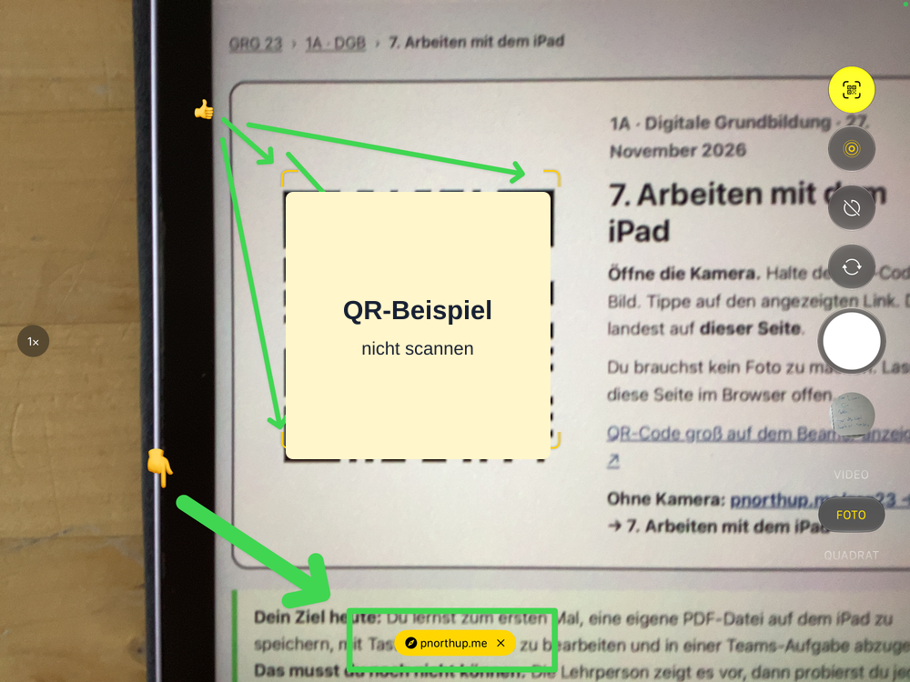

1. Unsere iPad-Regeln öffnen1. Open our iPad rules
- Öffne die Kamera auf deinem iPad.
- Halte den QR-Code in das Bild.
- Unten in der Mitte erscheint eine gelbe Blase mit Safari-Zeichen und pnorthup.me.
- Tippe auf diese Blase. So öffnest du unsere Regeln.
- Open Camera (Kamera) on your iPad.
- Hold the QR code in view.
- At the bottom in the middle, a yellow bubble with the Safari icon and pnorthup.me appears.
- Tap the bubble. It opens our rules.
Bleibe danach auf der Regeln-Seite. Sie ist dein einziges Browserfenster für den Moment.
Stay on the rules page afterwards. It is your only browser window for now.
